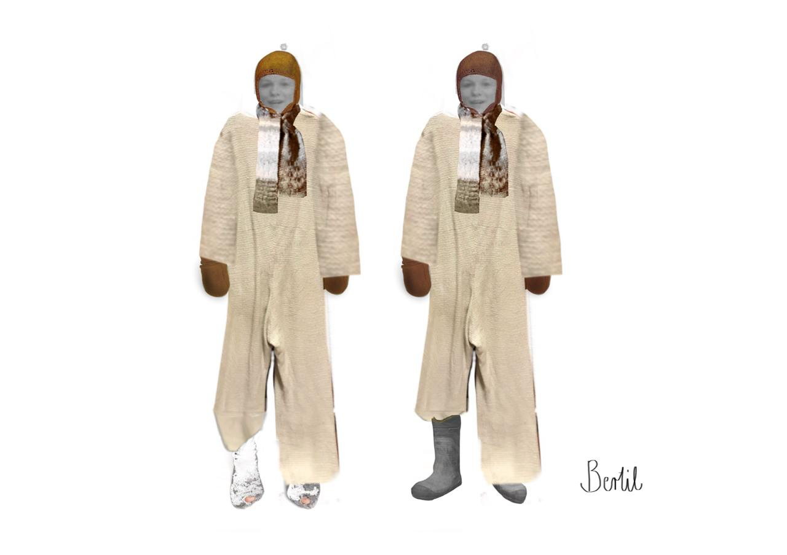

Theaterstück
Nils Karlsson Däumling
Junge Szene der Sächsischen Staatsoper, Dresden 2021
Nils Karlsson Däumling ist eine kurze Oper von Thierry Tidrow nach der Geschichte von Astrid Lindgren. Es handelt sich hierbei um eine mobile Produktion,die speziell für Kindergärten konzipiert wurde. Das Stück handelt von dem einsamen Kind Bertil, das sich eines Tages einen Freund imaginiert. Zusammen bauen sie sich eine Fantasiewelt auf und erleben Abenteuer. Das Aussattungskonzept spielt mit dieser Fantasie. Wie eine Pop-up-Welt bauen die Spielerinnen das Bühnenbild auf und um. Dabei bieten verschiedene Materialien die Möglichkeit, der Fantasie freien Lauf zu lassen. Außerdem kann der Fantasiefreund Nisse, durch sein veränderbares Kostüm, immer wieder neue Gestalten annehmen.
- 